Melangkah Bersama Menuju Kebermanfaatan & Jannah
“Bersama dalam kebaikan, menuju kebermanfaatan bagi sesama.”
Berawal dari kebersamaan sederhana perkumpulan anak sekolah sejak 21 Januari 2022, Romusha melangkah lebih jauh dengan memulai kegiatan berbagi pada 6 Juli 2026 untuk menyapa adik-adik di rumah yatim dan menghadirkan kepedulian nyata.
Menjaga erat tali persaudaraan sejak pertama kali berkumpul pada 21 Januari 2022.
Memulai kegiatan berbagi pada 6 Juli 2026 dan konsisten menyisihkan rezeki setiap bulan untuk rumah yatim.
Setiap rupiah yang dititipkan disalurkan seutuhnya bagi adik-adik yang berhak.
Dari tongkrongan pemuda biasa menjadi ladang amal jariyah bersama.
Dari sebuah perkumpulan,
tumbuh sebuah kepedulian tulus.
ROMUSHA Road to Jannah adalah bukti bahwa kebaikan sejati tidak memerlukan status formal yang rumit ataupun menunggu berlimpah harta.
Berawal dari sekelompok kawan sekolah yang sering berkumpul bersama, kami menyadari bahwa pertemanan akan jauh lebih abadi jika diikat oleh nilai kebaikan. Dengan menyisihkan sebagian uang saku dan rezeki setiap bulan, kami mulai mendatangi rumah-rumah yatim, membawa sedikit kebahagiaan dan doa tulus.
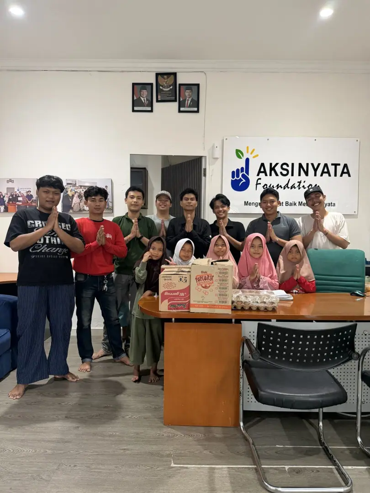
Berawal dari perkumpulan biasa,
berjalan menuju kebermanfaatan.
ROMUSHA mulai berkumpul pada 21 Januari 2022. Di masa awal, Romusha merupakan wadah kumpul anak-anak yang berasal dari almamater sekolah yang sama. Kebersamaan di masa muda menjadi awal mula terjalinnya ikatan erat di antara kami.
Seiring berjalannya waktu, kami sepakat bahwa masa muda harus diisi dengan hal yang bermakna bagi orang lain. Lahirlah inisiatif untuk menyisihkan sebagian rezeki setiap bulan tanpa membebani, mengumpulkan donasi, dan langsung menyalurkannya kepada yang membutuhkan.
Melalui program bulanan Romusha Berbagi yang resmi dimulai pada 6 Juli 2026, kami rutin mengunjungi rumah yatim, berinteraksi secara hangat, dan menyampaikan amanah. Bagi kami, berbagi bukan tentang seberapa besar nominal yang diberikan, melainkan tentang keikhlasan dan manfaat yang dapat dirasakan.
Road to Jannah
Nama “Road to Jannah” adalah kompas dan pengingat bagi kami semua. Bahwa setiap waktu yang terlewat, setiap kebersamaan yang terjalin, dan setiap rupiah yang disisihkan di dunia ini adalah ikhtiar kecil untuk menggapai keridhaan Allah Ta'ala menuju surga-Nya.
“Tidak harus menunggu mampu untuk berbagi, karena kebaikan dapat dimulai dari apa yang kita punya saat ini.”
Visi & Misi ROMUSHA
Prinsip fundamental yang menjaga arah langkah kami agar senantiasa teguh pada tujuan mulia.
Visi Kami
Menjadi wadah kebersamaan yang mampu menumbuhkan kepedulian sosial, mempererat persaudaraan, dan menebarkan manfaat bagi sesama sebagai jalan menuju kebaikan dan keberkahan hidup.
Misi Kami
- Menumbuhkan kepekaan dan kepedulian sosial terhadap sesama di sekitar.
- Membiasakan diri menyisihkan sebagian rezeki untuk kebaikan secara teratur.
- Memberikan bantuan konkret dan dukungan moral bagi anak-anak yatim dan dhuafa.
- Memupuk ukhuwah persaudaraan dalam bingkai kebaikan yang berkelanjutan.
- Menjaga amanah dan keterbukaan dalam setiap bentuk titipan yang diamanahkan.
Lima Pilar yang Kami Pegang Teguh
Nilai-nilai yang mendasari setiap keputusan, perkataan, dan aksi nyata relawan ROMUSHA.
Kebersamaan
Karena langkah kebaikan akan terasa lebih ringan, luas, dan bermakna saat diperjuangkan bersama-sama.
Kepedulian
Membuka mata dan hati agar senantiasa peka terhadap kesulitan serta kebutuhan saudara-saudara kita.
Keikhlasan
Menjalankan setiap aksi dengan niat yang murni dan tulus semata mengharap ridha-Nya tanpa pamrih.
Amanah
Menjaga setiap kepercayaan, doa, dan titipan donasi dari para sahabat dengan penuh tanggung jawab.
Konsistensi
Lebih memilih kebaikan kecil yang istiqomah dilakukan setiap bulan daripada hal besar yang hanya sekali terjadi.
ROMUSHA BERBAGI
Satu langkah sederhana setiap bulan untuk menyalakan harapan dan mengukir senyuman.
Romusha Berbagi merupakan agenda rutin bulanan yang resmi dimulai sejak 6 Juli 2026 dan menjadi jantung pergerakan kami. Secara berkala, kami menggalang dana swadaya dan partisipasi para dermawan, kemudian menyalurkannya secara langsung dalam bentuk santunan dan paket kebutuhan bagi rumah-rumah yatim.
Kami meyakini bahwa sentuhan kehadiran dan perhatian nyata memiliki arti yang luar biasa bagi mereka. Di setiap kunjungan, kami tidak hanya menyerahkan bantuan materi, namun juga meluangkan waktu untuk bercengkerama, mendengar cerita mereka, dan berdoa bersama.
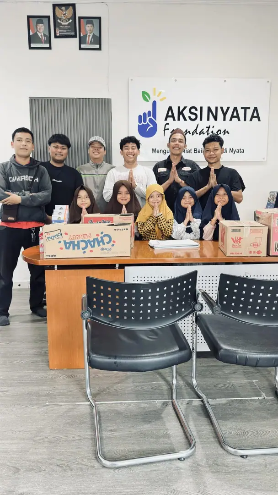
Berbagi • Peduli • Bermanfaat
Dari Niat Tulus Menjadi Manfaat Nyata
Bagaimana setiap amanah yang Anda titipkan kami kelola secara transparan dan bertanggung jawab.
Niat & Penggalangan
Pengumpulan donasi sukarela secara berkala setiap bulan dari anggota, relawan, dan para sahabat dermawan.
Survei & Koordinasi
Menghubungi dan memvalidasi kebutuhan rumah yatim sasaran agar bantuan yang disalurkan tepat guna dan berfaedah.
Penyaluran Langsung
Tim Romusha turun langsung bersilaturahmi, menyerahkan santunan, dan menebar keceriaan bersama adik-adik.
Dokumentasi & Amanah
Mendokumentasikan seluruh rangkaian kegiatan secara terbuka sebagai bentuk pertanggungjawaban kepada publik.
Jejak Langkah Kebaikan Kami
Setiap potret menyimpan ketulusan, senyum kebahagiaan, dan ikhtiar nyata di jalan kebaikan. Klik foto untuk melihat detail.
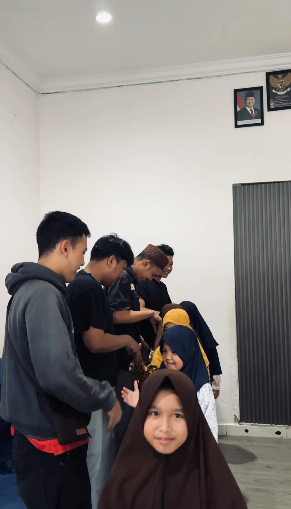
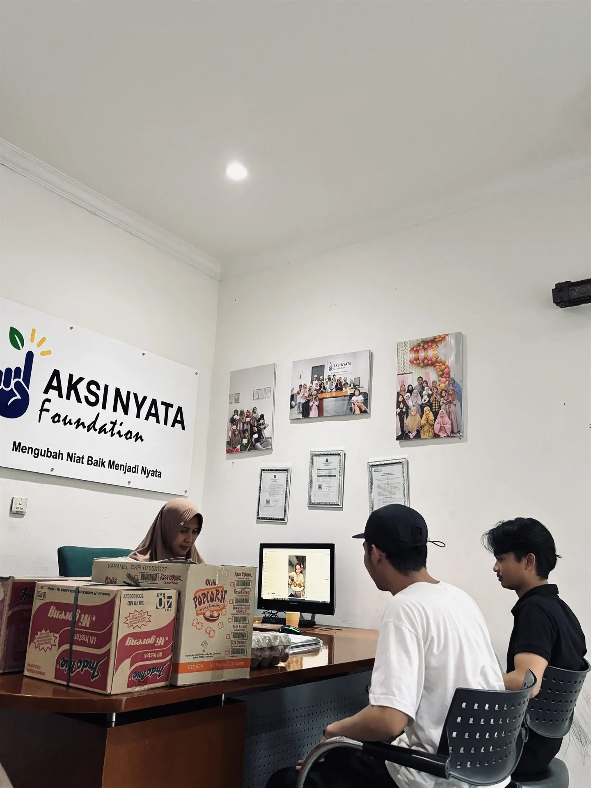
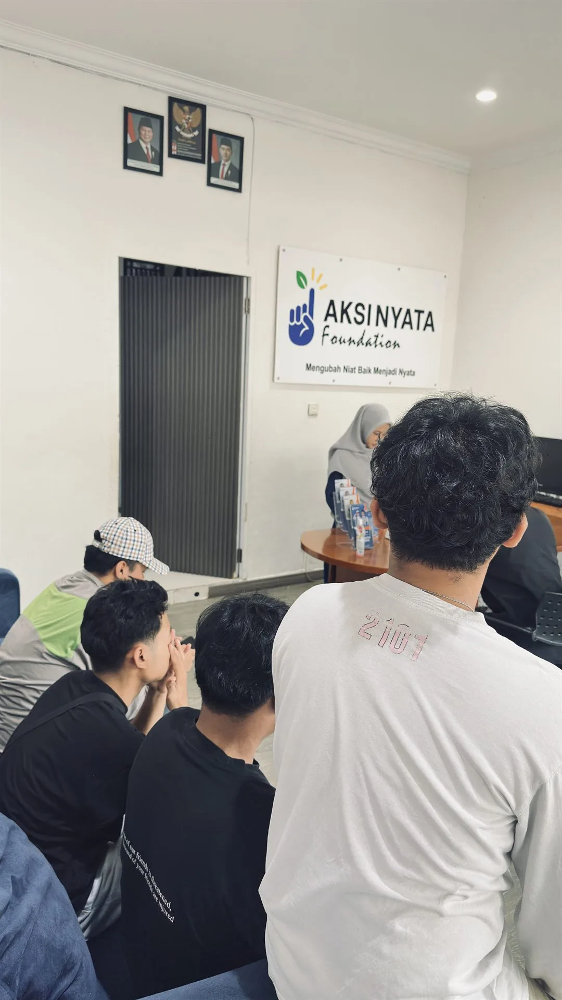
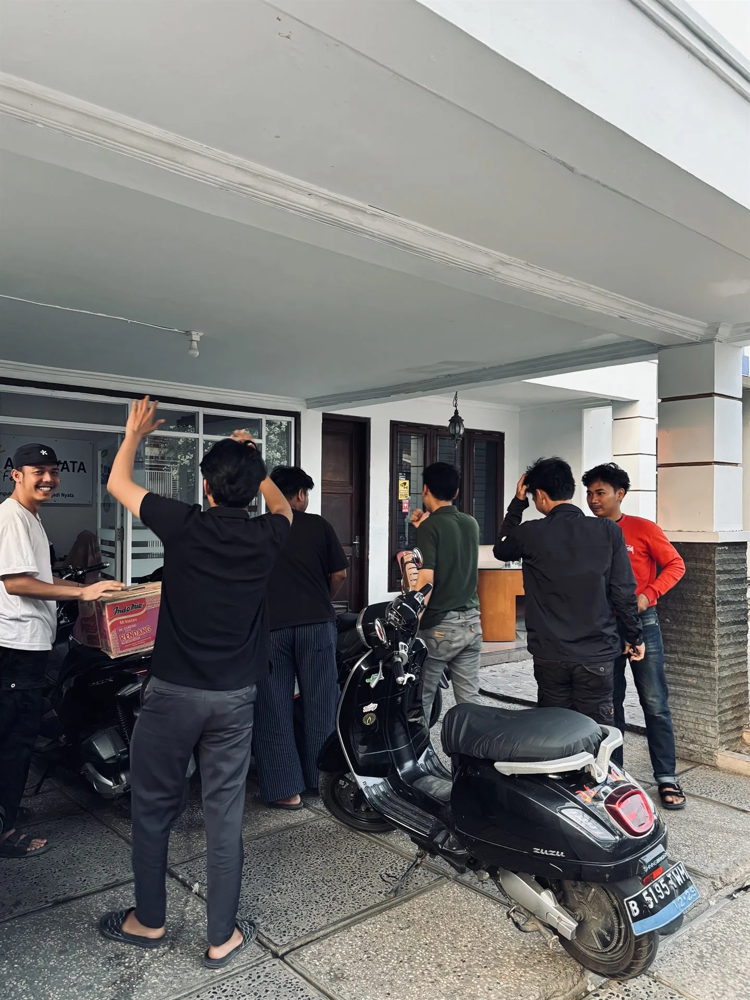
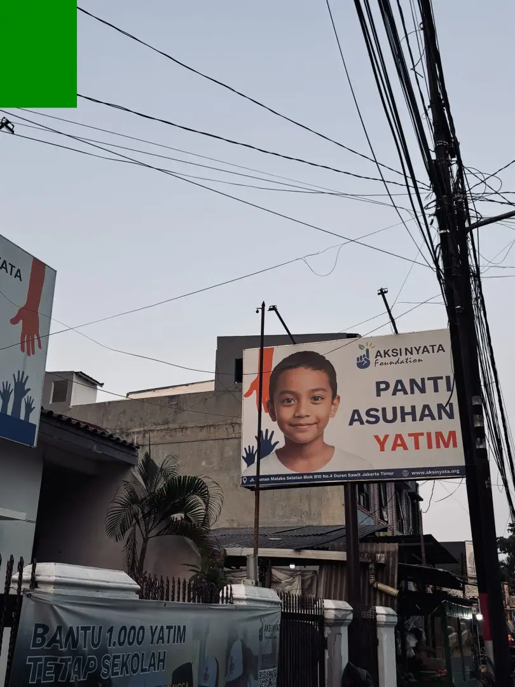
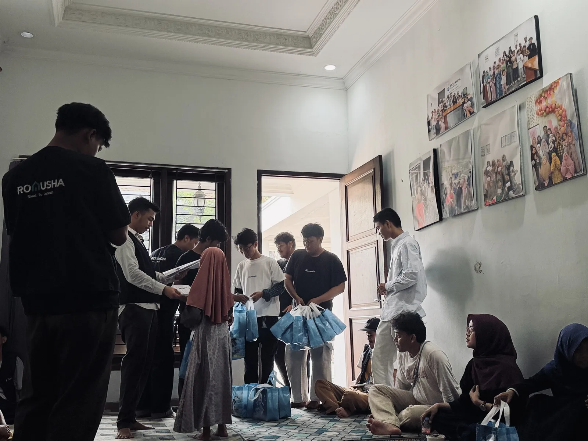
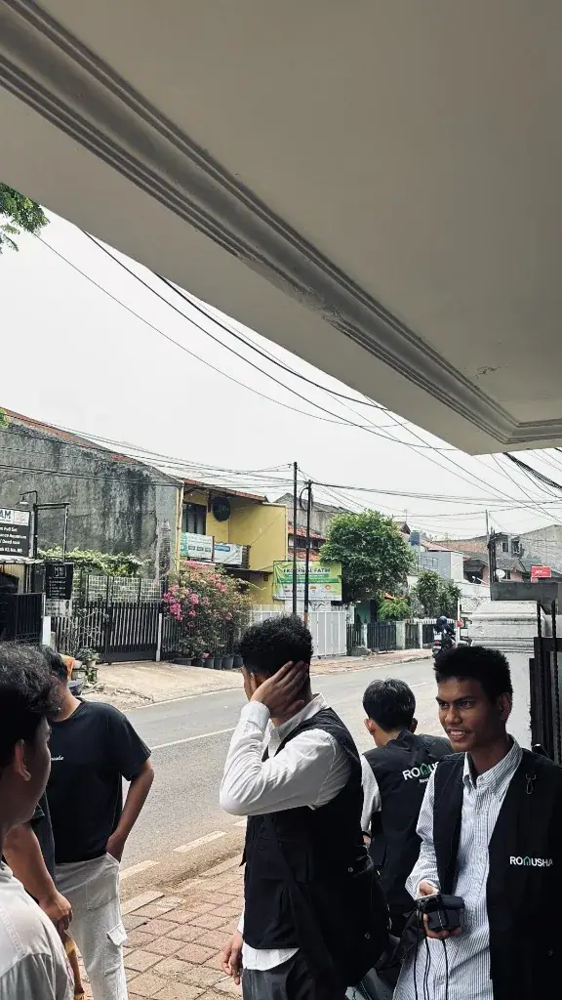
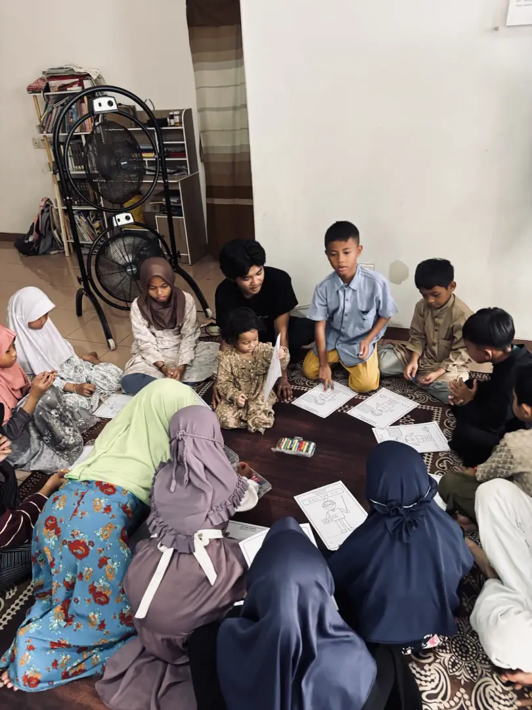
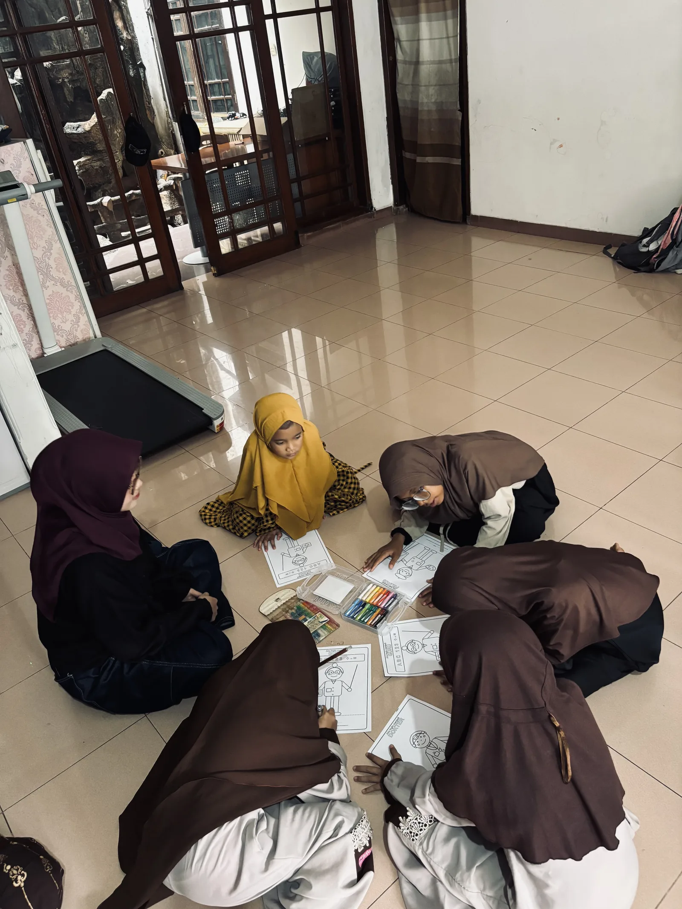
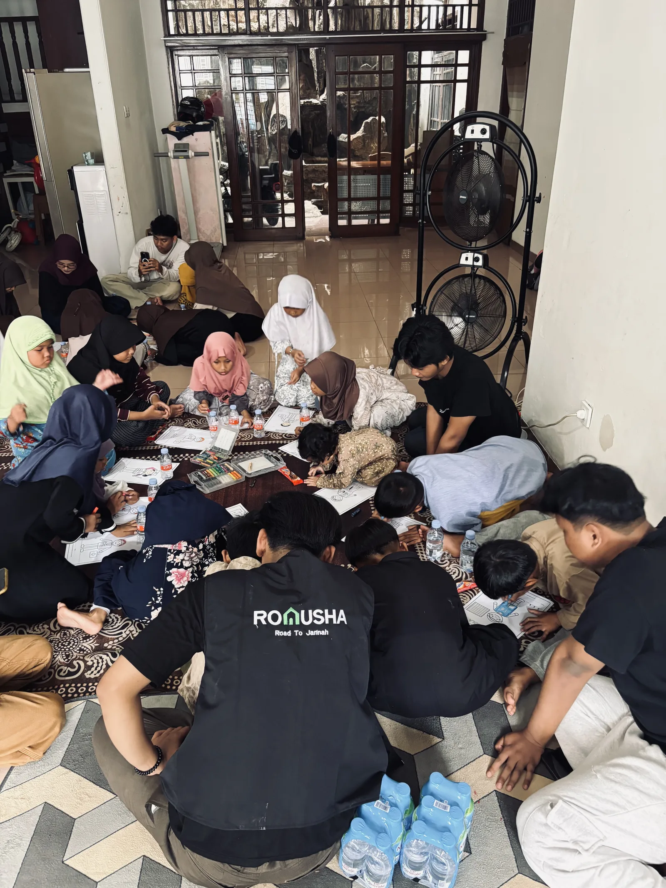
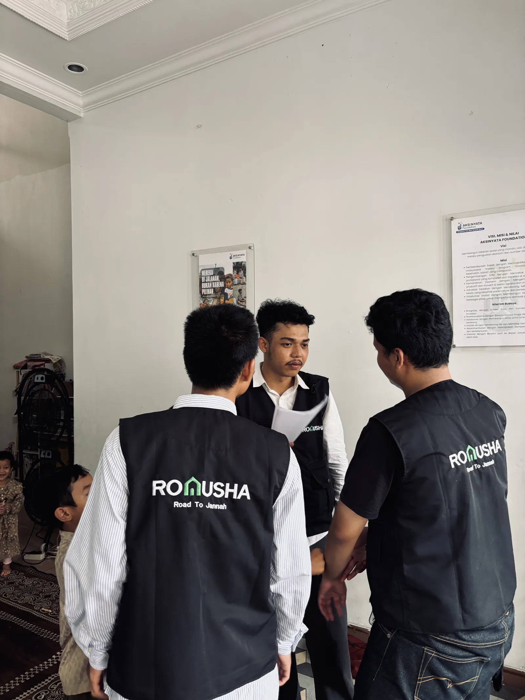
Mari Berbagi, Ukir Senyuman Mereka
Berapapun yang Anda sisihkan dengan keikhlasan akan menjadi kebahagiaan berharga bagi adik-adik di rumah yatim.

Scan QRIS & Salurkan Kebaikan
Donasi dapat disalurkan dengan mudah dari aplikasi e-wallet maupun mobile banking mana saja tanpa batas nominal minimal.
-
1
Buka Aplikasi Pembayaran Gunakan DANA, GoPay, OVO, ShopeePay, LinkAja, atau Mobile Banking (BCA, Mandiri, BRI, BNI, BSI, dll.).
-
2
Scan atau Unggah Gambar QRIS Pastikan nama penerima tertera Romusha Road to Jannah, Organisasi (NMID: ID1026632994681).
-
3
Masukkan Nominal Seikhlasnya Selesaikan pembayaran — setiap rupiah yang Anda sisihkan akan disalurkan seutuhnya bagi adik-adik yatim dan dhuafa.
Dokumentasi penyaluran donasi dipublikasikan secara terbuka melalui Instagram resmi @romusha.jannah.
Setiap Kebaikan adalah
Sebuah Tanggung Jawab Amanah.
Kami memahami bahwa setiap rupiah dan bantuan yang dititipkan adalah bentuk kepercayaan mulia. Oleh karena itu, ROMUSHA senantiasa memegang teguh prinsip transparansi:
Menjaga keikhlasan & ridha Ilahi
Hal yang Sering Ditanyakan
Temukan jawaban atas berbagai pertanyaan mengenai program, transparansi, dan cara bergabung bersama ROMUSHA.
ROMUSHA Road to Jannah adalah gerakan sosial pemuda yang mulai berkumpul sejak 21 Januari 2022. Berawal dari perkumpulan kawan satu sekolah, Romusha kemudian memulai aksi nyata kegiatan berbagi pada 6 Juli 2026 untuk menyalurkan bantuan dan santunan rutin bulanan bagi rumah yatim dan dhuafa.
Tidak. ROMUSHA terbuka bagi siapa saja—sahabat, keluarga, maupun masyarakat luas yang memiliki niat tulus untuk berbagi. Siapapun berhak menitipkan kebaikannya melalui program Romusha Berbagi.
Sama sekali tidak ada batasan minimal. Bagi kami, kebaikan dinilai dari keikhlasan dan niat tulus Anda, bukan dari besar atau kecilnya nominal. Setiap rupiah yang disisihkan sangat bernilai dan berarti bagi adik-adik penerima manfaat.
Kegiatan Romusha Berbagi diadakan secara rutin setiap satu bulan sekali. Tanggal dan lokasi rumah yatim sasaran ditentukan berdasarkan hasil musyawarah dan survei tim relawan kami.
Dokumentasi foto dan video lengkap dari setiap kunjungan dipublikasikan di akun Instagram resmi kami @romusha.jannah. Selain itu, Anda juga dapat meminta konfirmasi penyaluran secara langsung melalui DM Instagram kami.
Mari Menjadi Bagian dari
Perjalanan Kebaikan Ini.
Pintu silaturahmi selalu terbuka bagi Anda yang ingin mengenal lebih dalam tentang Romusha, berpartisipasi sebagai relawan, maupun berkolaborasi dalam gerakan kebaikan.
ROMUSHA
ROAD TO JANNAH“Bersama dalam kebaikan, menuju kebermanfaatan.”
Berkumpul sejak 21 Januari 2022 • Berbagi mulai 6 Juli 2026Dari sebuah perkumpulan, lahir sebuah kepedulian.
Dari kebersamaan, tumbuh sebuah kebermanfaatan.
Dan dari setiap kebaikan, kami terus melangkah menuju Jannah.